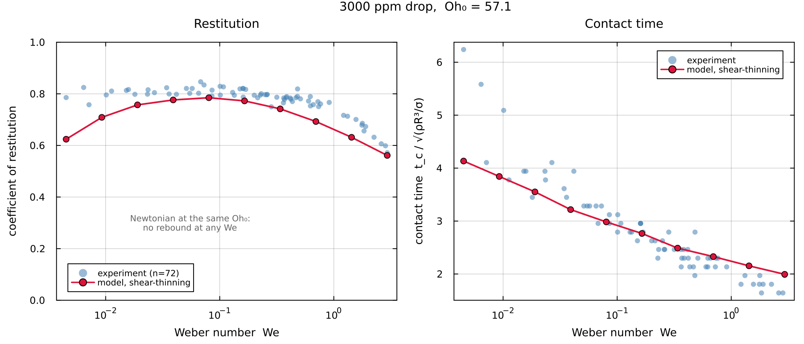

DropRebound.jl
The problem
A liquid drop of radius $R$, density $\rho$, surface tension $\gamma$ and dynamic viscosity $\eta$ falls onto a rigid, non-wetting surface at speed $v_0$. It flattens against the surface, spreads, recoils, and in most cases leaves again. Two numbers summarise the encounter: how long the drop stays in contact, and what fraction of its downward speed it recovers.
This package predicts both, for Newtonian, shear-thinning and viscoelastic liquids, by solving the linearised equations of motion in a spectral basis. Nothing is fitted to impact data. The fluid is characterised by rheometry, the geometry by three dimensionless groups, and the outcome follows.

Governing equations
Inside the drop the flow obeys the incompressible Navier-Stokes equations. Nothing is approximated here: the linearisation this package uses is a separate step, introduced below and kept separate deliberately, because the variational machinery does not need it.
\[\rho\bigl(\partial_t \bm u + \bm u\cdot\nabla\bm u\bigr) \;=\; \nabla\cdot\bm\Sigma + \rho\bm g , \qquad \bm\Sigma = -p\,\bm I + 2\eta(\dot\gamma)\,\bm e , \qquad \bm e = \tfrac12\bigl(\nabla\bm u + \nabla\bm u^{\mathsf T}\bigr) , \qquad \nabla\cdot\bm u = 0 ,\]
with $\dot\gamma = \sqrt{2\,\bm e\!:\!\bm e}$ the shear rate.
Two things about how this is written. The stress appears as $\nabla\cdot\bm\Sigma$ rather than as $-\nabla p + \eta\nabla^2\bm u$, because the two agree only for a uniform viscosity: $\nabla\cdot(2\eta\bm e) = \eta\nabla^2\bm u + 2\,\bm e\cdot\nabla\eta$, and for the shear-thinning fluids this package treats, that second term is the physics. And $\eta$ is written as a function of the shear rate from the outset, since a constant viscosity is the special case rather than the starting point.
The flow and the interface are assumed axisymmetric throughout, so a single polar angle $\theta$ describes the surface. That assumption is not lifted anywhere in this package.
Write $\Omega$ for the region the liquid occupies and $\partial\Omega$ for its free surface, at $r = R + \zeta(\theta,t)$. Every integral below is over one of these two. The conditions on $\partial\Omega$ carry the physics:
\[\underbrace{\partial_t\zeta = \bm u\cdot\bm n\,\sqrt{1+|\nabla_s\zeta|^2}}_{\text{kinematic}} , \qquad \underbrace{\bm n\cdot\bm\Sigma\cdot\bm t = 0}_{\text{no tangential traction}} , \qquad \underbrace{\bm n\cdot\bm\Sigma\cdot\bm n = -(\gamma\,\kappa + p_c)}_{\text{normal traction}} ,\]
all evaluated on the deformed surface, with $\kappa = \nabla_s\!\cdot\bm n$ the sum of the principal curvatures, positive for a sphere. The signs are worth checking on the static case: with $\bm n$ outward and no film, $\bm n\cdot\bm\Sigma\cdot\bm n = -p$, so the condition reads $p = \gamma\kappa = 2\gamma/R$, which is Young-Laplace. A film pressure $p_c \ge 0$ pushes inward, against $\bm n$, and so enters with the same sign as $\gamma\kappa$.
with $\bm n$ and $\bm t$ the normal and tangent to the surface, and
\[\bm\Sigma = -p\,\bm I + 2\eta\,\bm e , \qquad \bm e = \tfrac12\left(\nabla\bm u + \nabla\bm u^{\mathsf T}\right)\]
the stress tensor and the strain-rate tensor. Everything below is written in terms of $\bm e$, so it is worth noting now that it is symmetric and, for an incompressible flow, traceless.
The first condition is kinematic: the surface moves with the fluid. The second says a free surface cannot support shear. The third balances the normal traction against capillarity and against $p_c$, the pressure in the thin air film that separates the drop from the substrate during an impact. That film is the only agent by which the wall acts on the drop, and the drop never touches the solid. Away from the substrate $p_c = 0$ and the third condition is the usual Young-Laplace balance.
The tangential condition is the one that shapes everything downstream. A potential flow cannot satisfy it, so a viscous drop must carry vorticity near its surface, and any method that forbids that vorticity will over-predict the damping.
Dimensionless groups
Lengths are scaled by $R$ and time by the capillary time $\tau_c = \sqrt{\rho R^3/\gamma}$, the inertio-capillary time scale. It is a scale, not a period: the inviscid $l = 2$ mode has $\omega_2^2 = 8\gamma/(\rho R^3)$, so its period is $2\pi/\omega_2 = (\pi/\sqrt2)\,\tau_c \approx 2.22\,\tau_c$. Contact times are reported in units of $\tau_c$. Three groups remain:
| group | definition | what it controls |
|---|---|---|
| Weber $\mathrm{We}$ | $\rho v_0^2 R/\gamma$ | impact energy against surface tension |
| Ohnesorge $\mathrm{Oh}$ | $\eta/\sqrt{\rho\gamma R}$ | viscous dissipation against surface tension |
| Bond $\mathrm{Bo}$ | $\rho g R^2/\gamma$ | weight against surface tension |
A water-glycerol drop with $\rho = 1200\,\mathrm{kg\,m^{-3}}$, $\gamma = 65\,\mathrm{mN\,m^{-1}}$ and $\eta = 48\,\mathrm{mPa\,s}$, of radius $R = 0.32\,\mathrm{mm}$ falling at $v_0 = 11.5\,\mathrm{cm\,s^{-1}}$, has $\mathrm{Oh} \approx 0.30$, $\mathrm{Bo} \approx 0.019$ and $\mathrm{We} \approx 0.079$. The three material values are quoted so that all three groups can be checked.
From the equations to a variational statement
Solving the system above directly requires the stress divergence, the pressure field, and explicit imposition of two stress conditions on a moving boundary. There is a formulation that avoids all three.
Take a test velocity field $\bm v$ that is incompressible and compatible with the kinematic condition. Contract the momentum equation with it and integrate over the drop:
\[\int_\Omega \rho\bigl(\partial_t\bm u + \bm u\cdot\nabla\bm u\bigr)\cdot\bm v \,dV \;=\; \int_\Omega (\nabla\cdot\bm\Sigma)\cdot\bm v \,dV \;+\; \int_\Omega \rho\,\bm g\cdot\bm v \,dV .\]
The stress term integrates by parts exactly once, and this works for any stress tensor:
\[\int_\Omega (\nabla\cdot\bm\Sigma)\cdot\bm v \,dV \;=\; \oint_{\partial\Omega} (\bm\Sigma\cdot\bm n)\cdot\bm v \,dS \;-\; \int_\Omega \bm\Sigma\!:\!\nabla\bm v \,dV .\]
The remaining volume integrand collapses in two steps:
\[\bm\Sigma\!:\!\nabla\bm v \;=\; \bigl(-p\,\bm I + 2\eta\,\bm e\bigr)\!:\!\nabla\bm v \;=\; \underbrace{-\,p\,(\nabla\cdot\bm v)}_{=\,0} \;+\; 2\eta\,\underbrace{\bm e\!:\!\nabla\bm v}_{=\;\bm e(\bm u):\bm e(\bm v)} .\]
The first vanishes because the test field is divergence-free, which is where incompressibility of $\bm v$ earns its keep and why the pressure never has to be solved for. The second uses only that $\bm e$ is symmetric, so contracting it with $\nabla\bm v$ picks out the symmetric part of $\nabla\bm v$, which is $\bm e(\bm v)$.
Nothing in that step assumed a uniform viscosity. $\eta$ sits inside the integrand and is carried along unchanged, whatever it depends on. A derivation routed through $\nabla^2\bm u = 2\nabla\cdot\bm e$ instead would have needed $\eta$ constant, and would have excluded every fluid this package exists for. Working from $\nabla\cdot\bm\Sigma$ is both more general and shorter.
What remains is
\[\int_\Omega \rho\bigl(\partial_t\bm u + \bm u\cdot\nabla\bm u\bigr)\cdot\bm v\,dV \;+\; \int_\Omega 2\eta(\dot\gamma)\,\bm e(\bm u)\!:\!\bm e(\bm v)\,dV \;=\; \oint_{\partial\Omega} \left(\bm\Sigma\cdot\bm n\right)\cdot\bm v \,dS \;+\; \int_\Omega \rho\,\bm g\cdot\bm v\,dV .\]
The pressure has not disappeared. It has left the volume integral, where it was a constraint, and survives inside the traction, where the stress conditions will now remove it.
Split the test field on the surface into its normal and tangential parts, $\bm v = (\bm v\cdot\bm n)\,\bm n + \bm v_t$. The traction then contributes two pieces,
\[\left(\bm\Sigma\cdot\bm n\right)\cdot\bm v \;=\; \underbrace{\left(\bm n\cdot\bm\Sigma\cdot\bm n\right)}_{-(\gamma\kappa + p_c)}(\bm v\cdot\bm n) \;+\; \underbrace{\left(\bm n\cdot\bm\Sigma\cdot\bm t\right)}_{=\,0}\,(\bm v\cdot\bm t) ,\]
and each is settled by one of the two stress conditions. The tangential condition kills the second outright. The normal condition turns the first into capillarity and film pressure, so the right-hand side becomes
\[\oint_{\partial\Omega}\left(\bm\Sigma\cdot\bm n\right)\cdot\bm v\,dS \;=\; -\underbrace{\oint_{\partial\Omega}\gamma\kappa\,(\bm v\cdot\bm n)\,dS}_{\text{capillary}} \;-\; \underbrace{\oint_{\partial\Omega} p_c\,(\bm v\cdot\bm n)\,dS}_{\text{film}} ,\]
so that moving the capillary term to the left of the equation makes it $+\delta_{\bm v}V$, which is where the sign in the collected weak form comes from.
The capillary term is a derivative of an energy. Deforming the surface by a normal displacement $\delta\zeta$ changes its area by $\oint_{\partial\Omega} \kappa\,\delta\zeta\,dS$ (Identities and Standard Results, B.2), so with
\[V \;=\; \gamma\left(|\partial\Omega| - 4\pi R^2\right)\]
the excess surface energy, the first variation is $\delta V = \oint_{\partial\Omega} \gamma\kappa\,\delta\zeta\,dS$. Since $\bm v\cdot\bm n$ is a rate of normal displacement, the capillary integral is exactly $V$ differentiated along $\bm v$.
The body force is a potential in the same way: $\int_\Omega\rho\,\bm g\cdot\bm v\,dV$ is minus the first variation of the gravitational energy, since a force is minus the gradient of a potential, so from here on $V$ denotes the excess surface energy and the gravitational potential, and the body-force term is carried inside $\delta_{\bm v}V$.
Collecting, the weak form reads
\[\int_\Omega \rho\bigl(\partial_t\bm u + \bm u\cdot\nabla\bm u\bigr)\cdot\bm v\,dV \;+\; \int_\Omega 2\eta(\dot\gamma)\,\bm e(\bm u)\!:\!\bm e(\bm v)\,dV \;+\; \delta_{\bm v} V \;=\; -\oint_{\partial\Omega} p_c\,(\bm v\cdot\bm n)\,dS ,\]
for every admissible $\bm v$: inertia, dissipation and capillarity on the left, and the wall on the right. Nothing has been approximated to reach this point. The domain is the deformed one, the advective term is present, the viscosity depends on the shear rate, and $V$ is the exact area functional. The free-surface conditions have become natural. They were used once, to evaluate the boundary term, and they are never imposed on the solution; any field satisfying this statement for all $\bm v$ satisfies them.
Three things are gained. Only one derivative of the velocity appears, where the strong form needs two. The pressure never has to be solved for, because incompressibility was built into the test fields and the normal stress condition disposed of the rest. And the boundary conditions are automatic.
The reduced equations, in general form
What remains is to turn this from a statement about fields into a finite set of equations. Describe the configuration of the liquid by finitely many coordinates $\bm\xi(t)$, so that the velocity field is $\bm u = \sum_a \dot\xi_a\,\bm u^{(a)}(\bm x;\bm\xi)$. In general the basis fields depend on the configuration, because the domain does. Three scalars follow:
\[T(\bm\xi,\dot{\bm\xi}) = \tfrac12\!\int_{\Omega(\bm\xi)}\!\rho\,|\bm u|^2\,dV , \qquad V(\bm\xi) = \gamma\bigl(|\partial\Omega(\bm\xi)| - 4\pi R^2\bigr) + \text{gravity} , \qquad \mathcal R(\bm\xi,\dot{\bm\xi}) = \!\int_{\Omega(\bm\xi)}\! W(\dot\gamma)\,dV ,\]
with $W(\dot\gamma) = \int_0^{\dot\gamma}\eta(s)\,s\,\mathrm{d}s$ the dissipation potential of the constitutive law. The weak form above is then equivalent to
\[\boxed{\; \frac{d}{dt}\frac{\partial T}{\partial\dot\xi_a} \;-\;\frac{\partial T}{\partial\xi_a} \;+\;\frac{\partial\mathcal R}{\partial\dot\xi_a} \;+\;\frac{\partial V}{\partial\xi_a} \;=\; Q_a \;}\]
which is Lagrange's equations for a damped system, and is exact: it is the full nonlinear problem written in finitely many coordinates rather than a linearisation of it.
It is worth naming where each nonlinearity now lives, because that is what would have to be kept to lift the approximation of the next section. The advective term $\bm u\cdot\nabla\bm u$ is carried by $-\,\partial T/\partial\xi_a$, which is nonzero precisely because the domain and the basis fields move with the configuration. The exact curvature is carried by $V$, which is the true area rather than a quadratic form. The shear-rate dependence of the viscosity is carried by $\mathcal R$, which is the integral of the flow curve rather than a quadratic form. Only the last of these is retained by this package today.
Variational Mechanics carries out this reduction.
This is Onsager's variational principle [onsager], whose modern statement and use as an approximation tool are set out by Wang, Qian and Xu [wqx]. The principle is usually written for overdamped motion with the inertial term dropped, which is not our case: a bouncing drop is an oscillator, and the first term above matters as much as the second. The inertial generalisation is discussed by Archer [archer]. Solving such a principle with trial functions is the Ritz method, applied to variational problems in soft matter by Wang and co-workers [ritz].
The one physical approximation
Surface deformations are assumed small against the radius, so the equations above are linearised about a sphere. This is a choice made after the variational statement, not one built into it, and it is the only physical approximation in the package. Concretely it does four things:
| exact | linearised | consequence |
|---|---|---|
| $\Omega(\bm\xi)$ moves | frozen at the sphere $r = R$ | integrals and boundary conditions are evaluated on $r = R$ |
| $\bm u^{(a)}(\bm x;\bm\xi)$ | independent of $\bm\xi$ | $T = \tfrac12\dot{\bm\xi}^{\mathsf T}\bm M\dot{\bm\xi}$ with $\bm M$ constant, so $\partial T/\partial\xi_a = 0$ and the advective term is gone |
| $V$ the exact area | quadratic in $\bm\xi$ | a constant stiffness $\bm G$ |
| $\kappa$ exact | linearised curvature | the restoring coefficient $(l-1)(l+2)$ |
What survives is $\bm M\ddot{\bm\xi} + \bm C(\dot{\bm\xi})\,\dot{\bm\xi} + \bm G\bm\xi = \bm Q$, with the viscosity's state dependence kept inside $\bm C$. Lifting the approximation means restoring the terms in the middle column, in that order of difficulty; the framework above does not change.
The approximation is controlled by $\mathrm{We}$, and the amplitude it produces can be checked after the fact: at $\mathrm{We} = 1$ the largest surface mode reaches $|\zeta_2| \approx 0.4R$. That is not small, and results at higher Weber number should be read with that in mind.
No further approximation enters. Everything after this point is a discretisation whose error can be reduced by refinement, and Resolution and Convergence reports how far it has been reduced.
Two pages sit outside the main line of argument and are meant to be consulted rather than read through. Identities and Standard Results, which proves every standard result the chapters use, and Glossary of Symbols, which lists every symbol with its meaning, its array size and where it is introduced, and records the places where one letter carries two meanings.
Getting started
using DropSolver
p = ImpactParams(We = 1.0, Bo = 0.0189, Oh = 0.3038, M = 45, K = 3)
r = simulate(p)
r.cor # coefficient of restitution
r.tc # contact time, in units of sqrt(rho R^3 / sigma)$M$ truncates the angular expansion and $K$ the radial one. Resolution and Convergence gives the values at which each quantity stops moving.
Validation
Against the impact experiments of Gabbard and co-workers, restitution agrees to 10 per cent and contact time to 12 per cent in median, across 935 measurements spanning $\mathrm{Oh} \in [0.014, 0.79]$ and $\mathrm{Bo} \in [0.016, 0.071]$. Eight of the twenty-three Weber groups fall inside one experimental standard deviation.
Against a 3000 ppm shear-thinning solution, restitution agrees to 7 per cent and contact time to 7 per cent across seven Weber groups of at least five repetitions each. A Newtonian drop at the same zero-shear viscosity does not rebound at all, so the measured rebound exists because the fluid thins. The Carreau–Yasuda parameters come from that fluid's own rheometry.
Where the model stops
Agreement is not uniform in Weber number, and the place it fails is worth knowing before trusting a number.
A second Newtonian campaign, water rebounding from a Glaco superhydrophobic surface, reaches $\mathrm{Oh} = 0.0031$ and $\mathrm{Bo} = 10^{-4}$. It barely overlaps the first: between them the two span a factor of 250 in Ohnesorge and 3000 in Bond. Compared against the same quantity they agree about where the model works, and about where it does not.

| $\mathrm{We}$ | vs Gabbard | vs Glaco |
|---|---|---|
| below 0.03 | +21 % | +204 % |
| 0.03 – 0.1 | +8 % | +51 % |
| 0.1 – 0.3 | +1 % | −11 % |
| 0.3 – 1 | −5 % | −7 % |
| 1 – 3 | −1 % | +11 % |
Above $\mathrm{We} \approx 0.1$ the model sits within about ten per cent of both campaigns, with no consistent sign. Below it the model runs high in both, and the excess grows as the impact gets gentler.
The reason is structural. This model dissipates energy only in the bulk of the drop. It carries no work of adhesion, no contact-angle hysteresis and no dissipation in the air film, and none of those losses shrink as the impact gets gentler. The kinetic energy does. So their share grows as $\mathrm{We}$ falls, and a model without them returns a bounce that is too elastic: as $\mathrm{We} \to 0$ restitution here tends to a finite ceiling set by the bulk damping alone — about 0.95 at the conditions of the smallest drops above — where a real drop settles onto the surface instead. A single Weber-independent loss does not account for the size of the effect either, so drop radius enters as well; no correction is fitted here.
Use the model above $\mathrm{We} \approx 0.1$. Below that it is an upper bound on restitution rather than an estimate of it.
Two things that are not the explanation, both checked. Resolution is not: at water's conditions restitution moves 0.28 per cent between $K = 2$ and $K = 5$, and 0.13 per cent between $M = 45$ and $M = 90$. Nor is an impure liquid: dropping surface tension from 72.8 to 50 mN/m moves restitution by 2.4 to 5.0 per cent, and doubling viscosity by 2.6 to 4.9 per cent, so contamination of a severity that would be obvious in the fluid cannot produce a ten per cent discrepancy.
One model across four decades of viscosity
The sharpest test is not any single fluid but the five together. Water and four polymer solutions of rising concentration are separate liquids only in their rheology: the same equations, the same discretisation and the same contact treatment run on all of them, and the only thing that changes from one curve to the next is the measured $\eta(\dot\gamma)$. Nothing is fitted to any of the 389 impacts.

Zero-shear Ohnesorge runs from 0.0068 for water to 57 for the 3000 ppm solution — a factor of $8\times10^{3}$, spanning the regime where a drop barely notices its own viscosity to the regime where a Newtonian drop of the same viscosity would not rebound at all. Restitution agrees throughout:
| fluid | $\mathrm{Oh}_0$ | experiments | median relative error in $\varepsilon$ |
|---|---|---|---|
| water | 0.0068 | 53 | 8.6 % |
| 300 ppm | 0.50 | 82 | 5.6 % |
| 1000 ppm | 1.8 | 69 | 4.7 % |
| 2000 ppm | 9.9 | 114 | 4.2 % |
| 3000 ppm | 57 | 71 | 2.0 % |
Each row compares nine simulations at $M = 90$, $K = 3$ against the experiments nearest them in Weber number, within a factor of 1.3.
The five curves separate most at low Weber number and converge at high. A hard impact thins the concentrated fluids most, stripping away the viscosity that distinguished them at rest, and the experiments converge the same way. The residuals fall monotonically with concentration, so the fluids whose behaviour depends most on shear thinning are the ones the model reproduces closest.
How to read this
The material is ordered so that each part supplies what the next one needs.
Variational mechanics turns the statement above into matrices: how a trial space is chosen so that incompressibility costs nothing, and what the three operators inherit from the functionals they differentiate.
The free viscous drop solves the linearised problem exactly, by separation of variables. It supplies the target the discretisation is checked against, and its radial structure supplies the trial functions.
Contact treats the air film and the unilateral constraint between gap and pressure, and the two ways the contact region is located.
Shear-thinning fluids carries the viscosity through two routes: evaluated pointwise on the full strain field, which keeps the interior in the state, and reduced to one number per mode, which does not.
Viscoelastic fluids adds polymer stress as an extra state variable.
Using it covers solver choice, resolution, and the interface.
- onsagerL. Onsager, Reciprocal relations in irreversible processes I, Phys. Rev. 37, 405 (1931).
- wqxH. Wang, T. Qian and X. Xu, Onsager's variational principle in active soft matter, arXiv:2011.10821.
- archerA. J. Archer, Variational formulation for the dynamics of soft matter including inertia, arXiv:2607.18457.
- ritzH. Wang, B. Zou, J. Su, D. Wang and X. Xu, Variational methods and deep Ritz method for active elastic solids, arXiv:2203.15376.